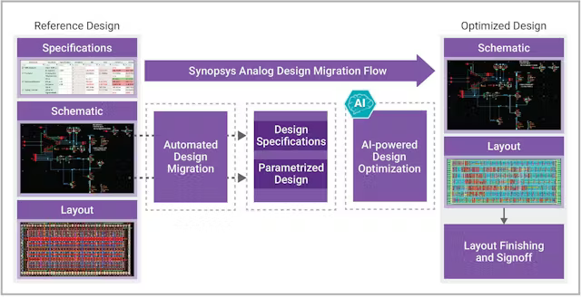
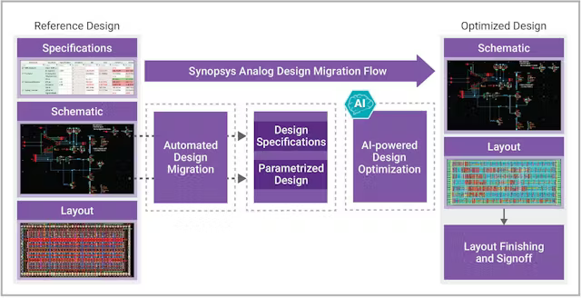
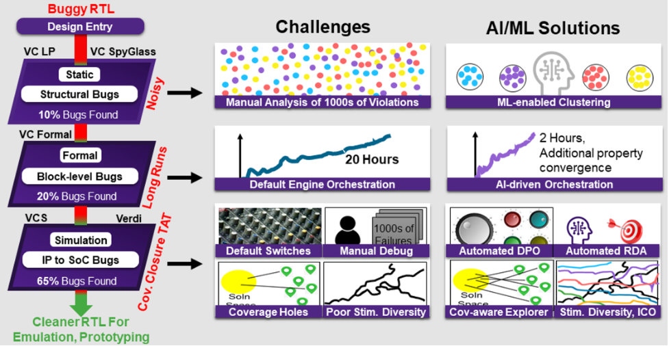
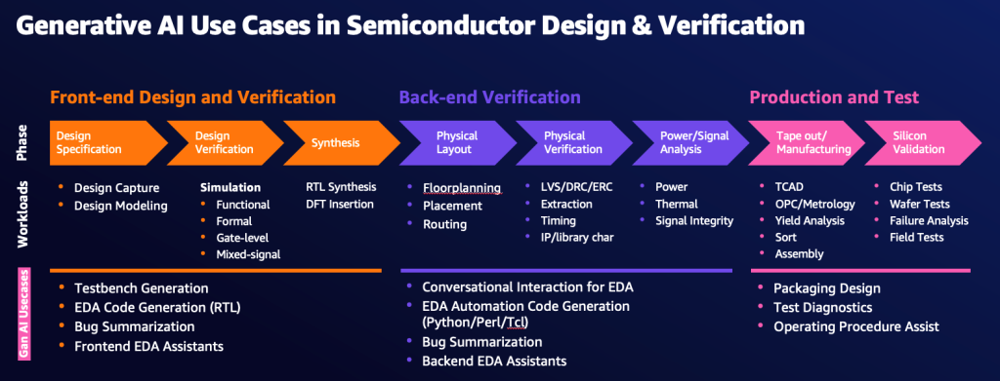

AI in ASIC Design
Artificial Intelligence is revolutionizing ASIC design by automating optimization, improving power efficiency, and accelerating verification processes.
Research Artificial Intelligence is revolutionizing ASIC design by automating optimization, improving power efficiency, and accelerating verification processes.
Research Machine learning models help detect design flaws faster, reducing development time and improving chip reliability.
Article AI assists in layout design verification, ensuring manufacturability while reducing errors in complex chip architectures.
Article 